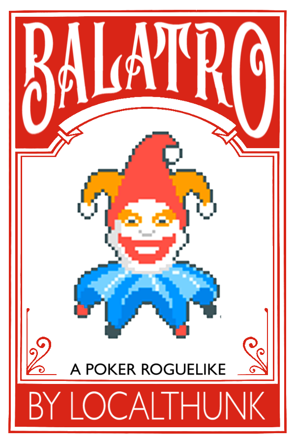

Balatro
Every archived year-end list appearance, including placement and points earned.
About the Game
Balatro is a poker-inspired roguelike deck builder all about creating powerful synergies and winning big. Combine valid poker hands with unique Joker cards in order to create varied synergies and builds. Earn enough chips to beat devious blinds, all while uncovering hidden bonus hands and decks as you progress. You’re going to need every edge you can get in order to reach the boss blind, beat the final ante and secure victory. The definitive poker roguelike experience. Endless possibilities - every pick-up, discard and joker can dramatically alter the course of your run. In-depth campaign mode complete with 8 difficulties, as well as challenge, daily and seeded runs. Deftly deploy an array of potent tools: different Decks, Jokers, Tarot cards, Planet cards, Spectral cards, and Vouchers. Use these versatile instruments to ignite a combo frenzy and turbocharge your poker hands, crafting electrifying, adrenaline-fueled synergies. 150 Jokers, each with their own unique abilities 15 Decks with distinct modifiers to choose from for each run 5 potential variants of each Joker which add further abilities 22 Tarot cards variants that can enhance your regular playing cards 11 Planet cards that help level up your possible poker hands 32 Voucher cards to help provide permanent buffs for your current run Immerse yourself in Balatro’s distinctive psychedelic world. Let the synthwave soundtrack wash over you - wind down, escape the daily grind and prepare to enter the ultimate roguelike flow state. Improve your collection and discover new cards and secrets with every single run. Make use of the in-depth stats screen to study your best hands, most used Jokers, and more! Immerse yourself in the CRT fuzz and enjoy detailed, hand-crafted pixel art.
| Released | 2024-02-20 |
|---|---|
| Developer | LocalThunk |
| Publisher | PlayStack |
| Genres | Strategy, Casual, Indie |
| Platforms | iOS, PlayStation 5, PC, Nintendo Switch |
SingleplayerSteam AchievementsFull controller supportSteam Cloud2DDifficultPixel GraphicsTurn-BasedReplay ValueChoices MatterRoguelikeTurn-Based Strategy
Where to Buy
Game information provided by RAWG.
Points by Year
List History
| Year | Source | List | Placement | Points |
|---|---|---|---|---|
| 2025 | SUPERJUMP | 50 Outstanding Games Released in 2025 | Unranked | 1 |